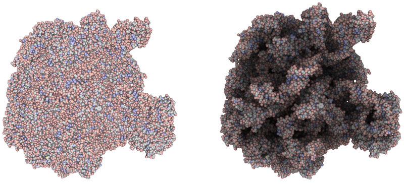
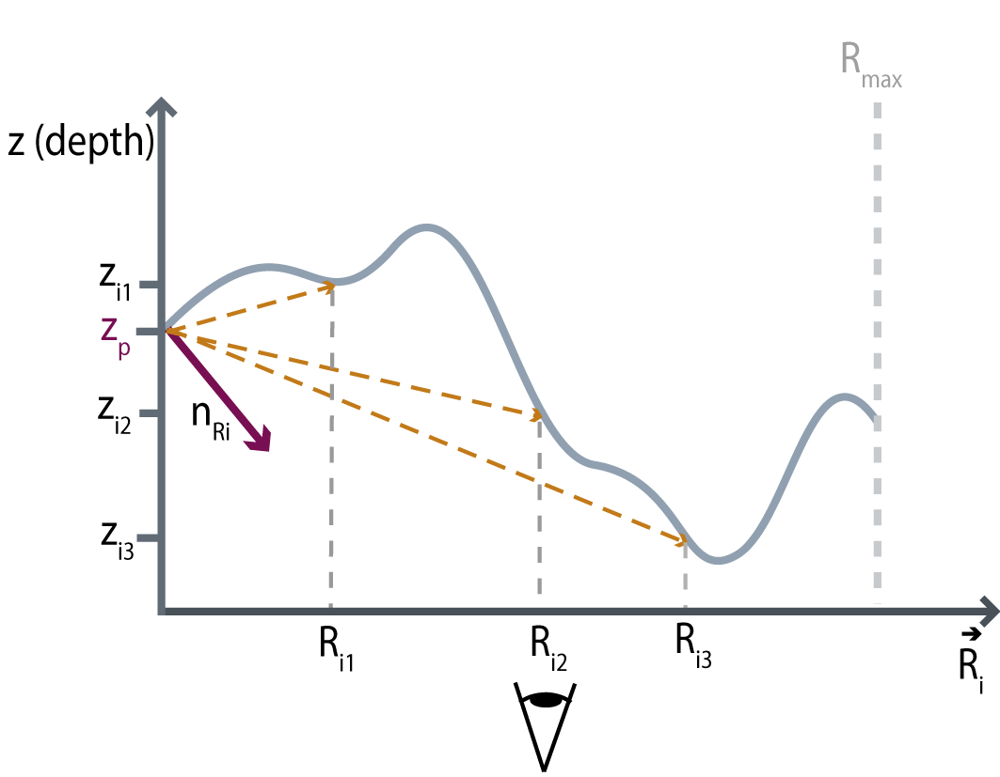
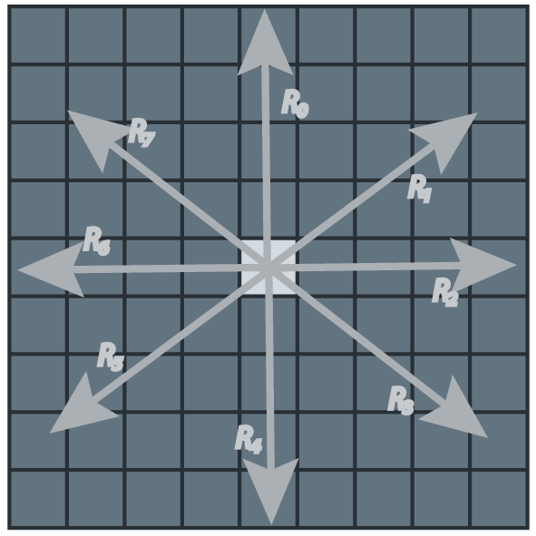
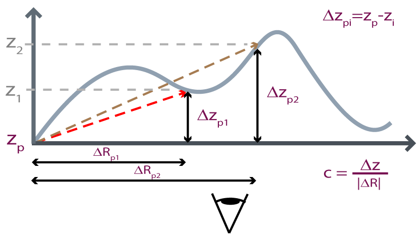
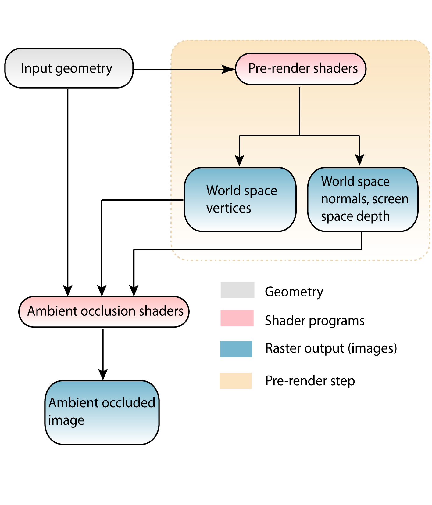

Ambient occlusion for a point in space is a measure of how much such point is hidden by its surrounding environment: the higher the occlusion value, the less amount of ambient light will hit the point. Attempts have been made to give a mathematical description of ambient occlusion, the first mathematical formalization of something similar to ambient occlusion I know about is contained in Zhukov et al..
Ambient occlusion is a cheap way of approximating global illumination effects used to give a photo-realistic appearance to synthetically generated images. Note that global illumination techniques are not just useful to produce nice looking images but are also a way to make a viewer understand the actual spatial shape of objects (Fig. 1).
 Fig. 1: real-time raytracing of chemical data with(right) and without(left) ambient occlusion.
Techniques smilar to the ones used to compute ambient occlusion can be adapted to approximate radiance transfer and generate color-bleeding effects in screen space.
Different methods for computing ambient occlusion have been presented over the past years; most of them fall into one of two categories:
Vertex or face based pre-computation methods are fine for static geometry with a high polygon count while per-pixel techniques work well for dynamic scenes, do not require the input to be a set of polygons, and therefore integrate well with ray-tracing and volume rendering.
The method described in this article is a per-pixel technique which was implemented between 2007 and 2008 as an add-on to a real-time ray-tracer for large molecular models and further modified to work with any type of data. The key technique employed by the algorithm is to use the angular coefficient of rays to select the points that contribute to the overall occlusion.
Screen space ambient occlusion for a pixel $p$ can be approximated by computing the average of occlusion contributions coming from a number of directions: $$ A_{p} = \frac{1}{N}\sum_{i=1}^N A_{pi} $$
Where $A_{p}$ is the total occlusion at $p(x,y)$ and $A_{pi}$ is the contribution coming from direction $i$ to the total occlusion.
 Fig. 2 Screen space depth profile.
The term $A_{pi}$ is computed by integrating the ambient occlusion along a linear path in screen space: $$ A_{pi} = \frac{1}{S}\sum_{j=1}^Socc(\vec{p},\vec{o}_{ij}) $$ Where:
The contribution to the total occlusion of a point in screen space from another point in screen space is approximated by first transforming the two points into world space then applying the formula:
Where:Note that several variations are possible here: the normal at $\vec{O}$ can be used instead of $\frac{\vec{O}-\vec{P}}{\left|\vec{O} - \vec{P}\right|}$; all the computation can be carried on in screen space; the normals can be precomputed or computed on the fly from the tangent space.
Also it is possible to use a varying-step approach where the step increases with the distance (e.g. $step(d)=kd^2$) to take into account high spatial frequencies only at close distance; this allows to take into account contributions from both near and far fragments while still running at reasonable frame rates.
$f(d)$ can be e.g.: $$ f(d) = B(d_{max})d^2 + 1 $$ Where $B(d_{max})$ is a coefficient dependent on the maximum ray length. The value assigned to $B$ ensures that $occ(\vec{p}, \vec{o}_{d_{max}})$ is always equal to a predefined occlusion value.
According to the equations defined in the previous sections ambient occlusion at each pixel can be computed by selecting a number of directions in $2D$ screen space and averaging the occlusion contributions along each direction.

Fig. 3 Rays in screen space.
The occlusion along a specific direction is computed by averaging the contributions of each point found along the $2D$ ray shot in that direction; now, in order to minimize the number of times Eq. 1 is applied we need to understand if a point along the ray is at all visible from the ray starting point (the pixel being shaded) i.e. if a line connecting the two points does not intersect any geometry. It turns out this is quite easy to understand by comparing the angular coefficient of the $3D$ line connecting the ray starting point with the previous intersection point and the one of the $3D$ line connecting the current point with the ray staring point.
The algorithm to compute the per-pixel occlusion is therefore:
 Fig. 4 Slope(angular coefficient) of rays.
The MAX_DISTANCE length of the ray in pixels is computed as a percentage of the object/scene bounding sphere radius projected into screen space. In cases where the scene completely fills the view it is actually easier to use a percentage of the view size.
Note that the value $\left(z_{p} - z_{o}\right)$ is negative for points $\vec{o}$ that are farther away from then viewer than point $\vec{p}$.
The data needed by the algorithm described in the previous section are:
Real-time ambient occlusion computation is therefore performed in two separate rendering stages:
 Fig. 5 Architecture diagram of rendering engine.
Screen space ambient occlusion can be successfully used to approximate global illumination effects, depending on the intended usage it might however show serious limitations, the biggest of which is the inability to take into account objects which lay outside the current view frustum; techniques can be applied to mitigate this problem such as using a different (bigger) frustum for the pre-rendering stage or implementing methods similar to reflection mapping. Note however that the ability to use only the visible geometry for performing ambient occlusion computation can indeed be desirable in cases where the viewpoint is actually inside the model to explore as it is the case for architectural walkthroughs, interior designs or scientific visualization in general.
The plan is to use the described technique to perform radiance-transfer like behavior in a new volume/ray-casting based rendering engine currently in development. The basic idea is to implement a multi-stage algorithm where the first stage takes care of illuminating objects visible from light sources and the subsequent stages to compute ambient light from previously illuminated geometry.
Also I plan to extend a previously developed ambient occlusion generation application with a variation of this algorithm to generate pre-computed cube and spherical ambient occlusion maps.
Bavoil L. and Sainz M.
Multi-Layer Dual-Resolution Screen-Space Ambient Occlusion,
ACM SIGGRAPH 2009 Talk Program.
T. Ritschel, T. Grosch and H. P. Seidel,
Approximating Dynamic Global Illumination in Image Space,
MPI Informatik
Perumaal Shanmugam and Okan Arikan
Hardware accelerated ambient occlusion techniques on GPUs,
Proceedings of the 2007 symposium on Interactive 3D graphics and games, Seattle.
Tatarchuk N. Parallax Occlusion Mapping for Highly Detailed Surface Rendering Game Developer Conference 2006, San Francisco.
Kontkanen J. and Laine S.
Zhukov S., Iones A., Kronin G.
"An ambient light illumination model,
Rendering techniques '98:
proceedings of the Eurographics Workshop, Vienna - AT, 1998.